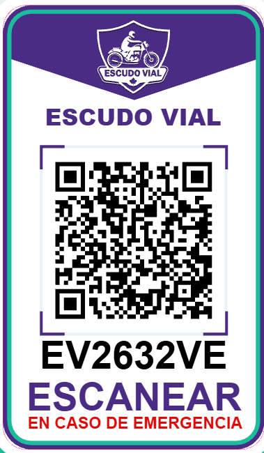

Un simple sticker.
Una infraestructura completa de rescate.
Escudo Vial une la física de materiales de alta durabilidad con una plataforma médica en la nube y un centro de monitoreo 24/7 listo para reaccionar ante una alerta de pánico.
Carga instantánea de ficha médica optimizada para cualquier conexión móvil.
Tecnología pasiva permanente. Siempre operativo, haga frío, llueva o pasen años.
Operadores capacitados para enlazar al instante con ambulancias y familiares.
Protección UV contra decoloración solar, barro, lavado a alta presión y combustible.
Sin Suscripciones Forzosas
El acceso a tu ficha médica para los rescatistas es libre y gratuito de por vida. Tu seguridad no tiene fecha de caducidad ni pagos mensuales.
Privacidad Protegida
Tú decides qué datos mostrar públicamente (solo lo indispensable: sangre, alergias y contactos SOS). Datos encriptados de extremo a extremo.
Geolocalización Inmediata
Al pulsar el botón de pánico, se emite tu ubicación satelital exacta con precisión milimétrica a la central de auxilio.

Diseñado para ser identificado al instante en carretera.
Cada pliego incluye stickers homologados (uno principal de alta visibilidad para el casco y complementarios para el chasis, equipamiento o cédula).
Escanea
Escanea el código QR de tu sticker con la cámara de cualquier teléfono inteligente sin necesidad de descargar ninguna aplicación.
Llena tus datos
Registra tu información médica vital: grupo sanguíneo, alergias a medicamentos, condiciones especiales y tus números de contacto de emergencia.
Adherir en el casco, tu moto o cédula
Coloca tus stickers en el casco, en el chasis de tu moto o en tu documento de identidad para portar tu escudo de protección en todo momento.
Monitoreo satelital y respuesta en tiempo real.
Así recibe nuestro centro de comando cada alerta de emergencia. Interactúa con la consola simulada para ver la geolocalización y el despacho en acción.
Recepción Inmediata en Pantalla
Al activarse el código QR o botón de pánico, la emergencia ingresa en la consola del operador en menos de 2 segundos con telemetría en vivo y alerta audible.
Geolocalización y Ruta de Rescate
El mapa táctico fija las coordenadas satelitales exactas del siniestro y calcula la trayectoria más rápida para el despacho de ambulancias y patrullas viales.
Triaje Médico y Enlace Familiar
El operador transmite el grupo sanguíneo y alergias a la unidad en ruta mientras el sistema enlaza llamadas automáticas a los familiares registrados.
“Visualizar la ubicación en el mapa y el cuadro médico en el primer minuto reduce drásticamente el tiempo de traslado y salva vidas en carretera.”
¿Qué sucede cuando se
presiona el botón de pánico?
Un flujo milimétrico de respuesta diseñado para actuar cuando el conductor no puede hablar.
Captura GPS Satelital
El navegador del socorrista captura las coordenadas geográficas exactas del lugar del siniestro con precisión de metros.
Alarma en Central 24/7
La consola de nuestros operadores emite una alerta acústica y visual prioritaria con el mapa y la ficha completa del piloto.
Enlace con Familiares
El sistema dispara de inmediato llamadas automáticas y SMS con el mapa del accidente a los contactos SOS registrados.
Respaldo Escudo Vial
Póliza de emergencias con coberturas garantizadas:
Preguntas Frecuentes
Tu información médica está vinculada en la nube a tu cuenta de Escudo Vial, no al casco físico. Si cambias de casco, puedes solicitar un nuevo sticker de reposición por una fracción del costo y vincularlo en 30 segundos con el mismo perfil.
¡No! Ese es uno de los pilares fundamentales del sistema. Cualquier teléfono móvil estándar (iPhone o Android) escanea el código directamente desde la cámara nativa y abre la ficha médica en el navegador en menos de 2 segundos.
No. Utilizamos adhesivos acrílicos certificados grado automotriz y aeroespacial (compatibles con carcasas de fibra de carbono, fibra de vidrio y policarbonato). Si decides retirarlo a futuro, sale limpio con calor suave sin dejar residuos ni degradar la pintura.
Tú tienes control total desde tu panel de usuario sobre qué datos mostrar. Solo se recomienda exponer lo clínicamente indispensable para salvar la vida en una sala de shock o carretera (grupo sanguíneo, alergias a fármacos y contactos de emergencia). No se solicitan datos financieros ni números de cuenta.